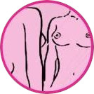
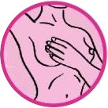
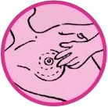

Auto Exame das Mamas
O Câncer de Mama é a principal causa de óbitos por câncer das mulheres brasileiras. Para prevenir o desenvolvimento e detectar precocemente essa doença, o autoexame das mamas é o primeiro passo.
Cerca de 80% dos tumores de mama são descobertos pelas próprias mulheres. O ideal é que cada uma conheça detalhadamente as suas mamas, o que facilita a percepção de qualquer alteração. A realização desse exame é recomendada para todas as mulheres maiores de 20 anos de idade. O autoexame é feito sete dias após o inicio da menstruação.
Após a menopausa, deve-se escolher um dia por mês para fazê-lo. A partir dos 40 anos de idade, as mulheres devem realizar anualmente a mamografia, exame que permite a identificação de lesões não palpáveis.
O câncer de mama atinge principalmente mulheres em idade em torno da menopausa (entre 45 e 55 anos). Em todas as faixas etárias podem aparecer nódulos benignos, que também vão precisar de tratamento.
Lembre-se: o autoexame de mamas é apenas a primeira precaução. A consulta ginecológica anual e a atenção aos sinais emitidos pelo corpo, como o aparecimento de secreções e dores, são essenciais para prevenir e tratar qualquer problema.
Prevenção
O exame de mamas pode ser feito em frente ao espelho, em pé ou deitada.
Siga as seguintes instruções para o autoexame:
Em frente ao espelho
-
 Posicione-se em frente ao espelho;
Posicione-se em frente ao espelho; - Observe os dois seios, primeiramente com os braços caídos;
- Coloque as mãos na cintura fazendo força;
- Coloque-as atrás da cabeça e observe o tamanho, posição e forma do mamilo;
- Pressione levemente o mamilo e veja se há saída de secreção.
Em pé (pode ser durante o banho)
- Levante seu braço esquerdo e apoie-o sobre a cabeça;
- Com a mão direita esticada, examine a mama esquerda;
- Divida o seio em faixas e analise devagar cada uma dessas faixas.
- Use a polpa dos dedos e não as pontas ou unhas;
- Sinta a mama;
- Faça movimentos circulares, de cima para baixo;
- Repita os movimentos na outra mama.
Deitada
- Coloque uma toalha dobrada sob o ombro direito para examinar a mama direita;
- Sinta a mama com movimentos circulares, fazendo uma leve pressão;
- Depois apalpe as axilas;
- Inverta o procedimento para a mama esquerda.
Caso sinta algum nódulo ou mudança na textura ou tamanho, procure um médico ginecologista. Ele realizará o exame clínico de mama e poderá solicitar a mamografia.